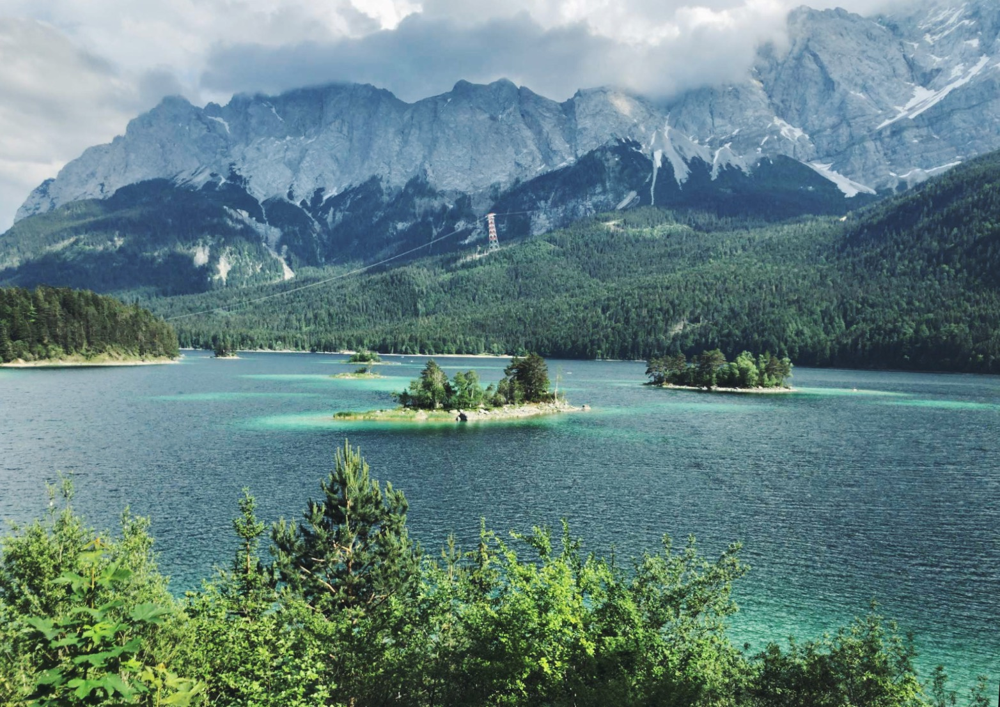

Zugspitze and Eibsee
7-10 April 2023

This event takes place during the German national holidays 7-10 April.
Day 1
Date: 7 April
- ✈️ Arrival at our location.
- 🥾 Hike along the waterfalls (4h) Komoot-link
- 🥘 Going to a supermarket and having a dinner in our cozy house
Day 2
Date: 8 April
- ⛰️ Visiting Zugspitze in a cable car
- 🥾 Hike around Eibsee (4h, difficult due to elevation) Komoot-link
- 🍔 Tasting the best burgers in town
Day 3
Date: 9 April
- 🥾 Beautiful alpine hike (6h, difficult due to length) Komoot-link
- 🥘 Cooking at home
Day 4
Date: 10 April
- 🥾 Hike with a beautiful mountain view (4h, intermediate) Komoot-Link
- ✈️ Going home.
Accommodation
Rented house / flat with a fully equipped kitchen for a group of 5-8 people. You may have to share a king-sized bed with a person of your gender.


Transfer
To the location:
1.5-hour flight Berlin - München (7 April 7:20-8:30) or Düsseldorf - München (7 April 6:40-7:56).
Then 1h by train.Back home:
1h by train, then a flight: München - Berlin (10 April 17:00 or 20:00) or München - Düsseldorf (10 April 16:00 or 19:30).Costs
- 240 Euro - Participation fee which includes accommodation and organisation of the trip.
- 90-128 Euro - Flight. It will get more expensive with time, so book the tickets as early as possible.
- 40 Euro - Train tickets to arrive and leave our accommodation.
- 57 Euro - if you want to visit Zugspitze with a cable car, book the ticket at https://zugspitze.de/de/Service-Informationen/Tickets-Tarife/Zugspitze Also you'll need some pocket money for food and local busses.
How to participate
- Join the event on Meetup.
- Book the flight tickets.
- In February: Transfer the participation fee per Paypal to dvodoleeva@gmail.com and text Dasha that you're done 🚀
Important!
- This is a privately organized event. Hikes will take part in the raw nature. You're responsible for your safety at all times.
- All featured hikes require you to be fit. However, if you feel tired feel free to skip.
- The plan of the trip might be changed or adapted to the curcumstances: weather, delays of any kind, group dynamic etc. Regardless of that we'll make our best to make this trip wonderful and unforgettable.